Your map
Every placeyou've been.
Countries, cities and flights: all your trips at a glance.
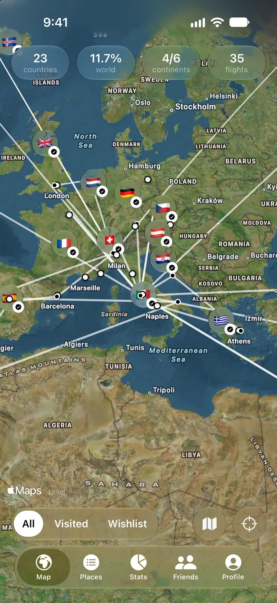
TravelTo
Countries, cities and flights on your own world map. Free for iPhone.
or
Try the betaNew features first, with TestFlightThe beta runs in Apple's free TestFlight app: the link shows you how. Requires iOS 27. Link not opening from TikTok? Tap ··· and choose “Open in browser”.
Your map
Countries, cities and flights: all your trips at a glance.

Import from Photos
TravelTo reads where your photos were taken, on your iPhone, and finds countries, cities and neighborhoods.
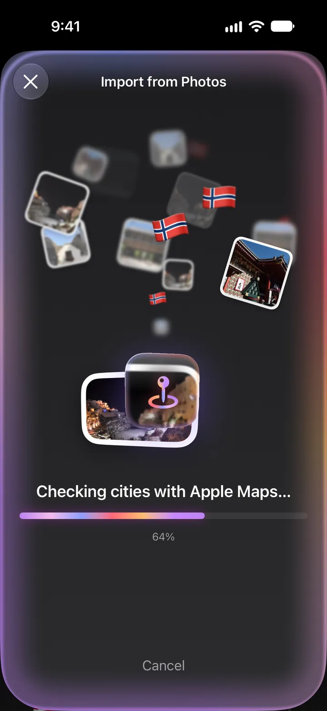
Cities & neighborhoods
Check the list with its photos and add only the places you've been to.
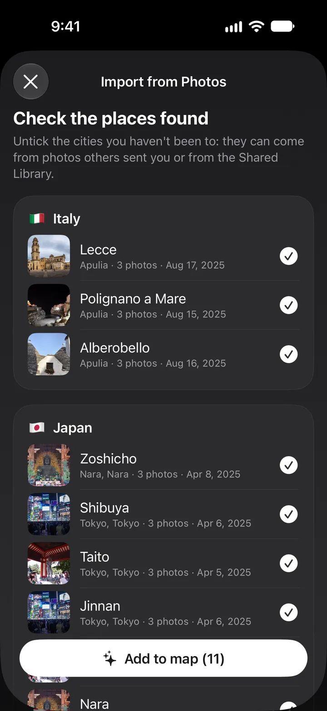
Your progress
Tap a number on the map and see how much of the world you've explored.
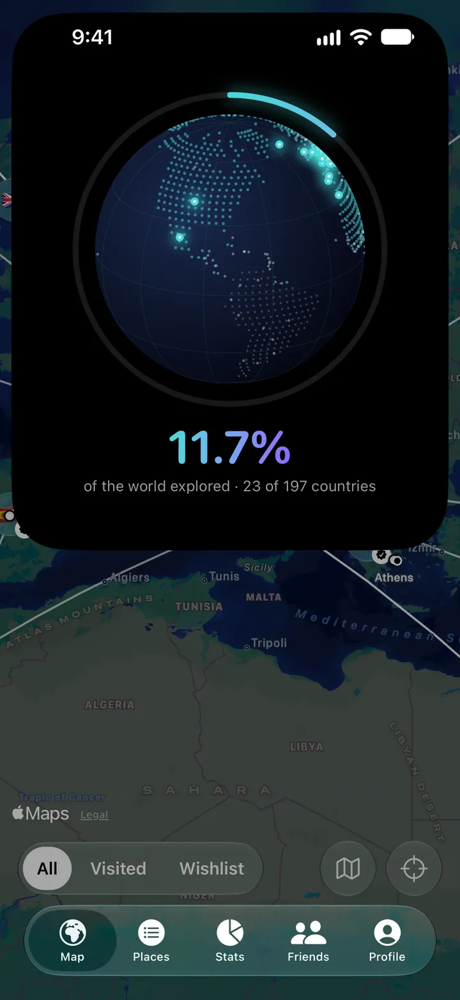
Countries & cities
Add a city and its region is ticked for you. With the dates of every trip.
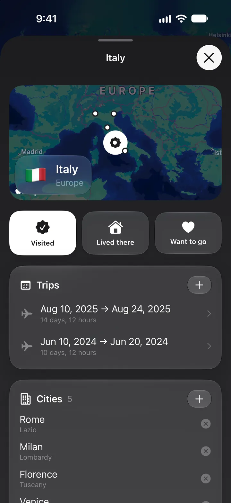
Memories
Up to 10 photos and your own notes, always at hand.
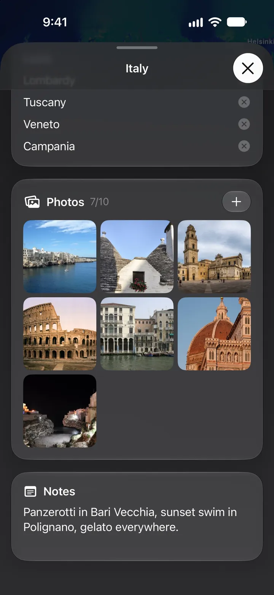
Flights
Paste the flight confirmation or share its PDF: TravelTo finds routes and dates.
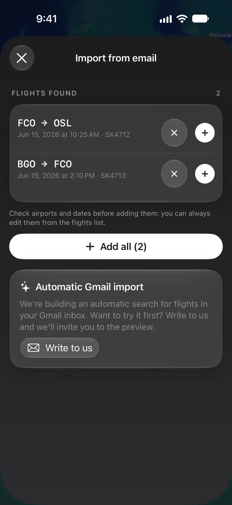
Stats
Continents, US states, days away, kilometres and hours in the air.
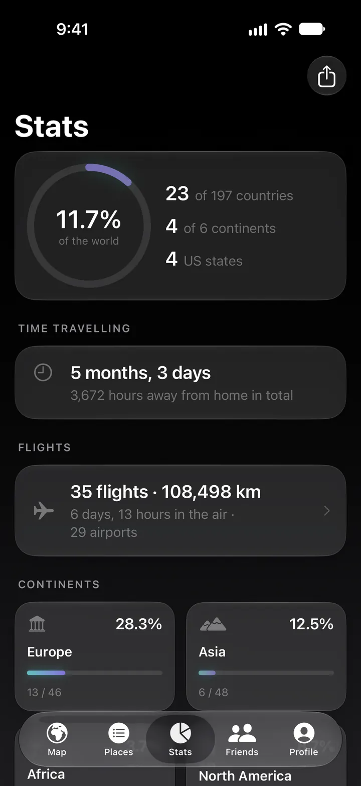
RewindNew
Countries, kilometres flown and memories of every year, in a story to share.
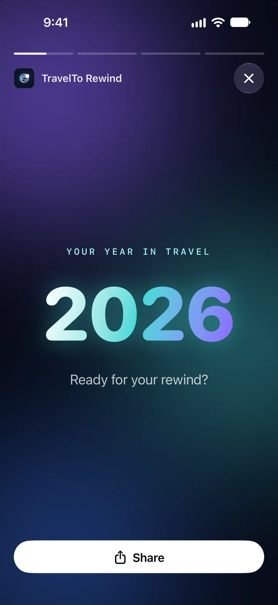
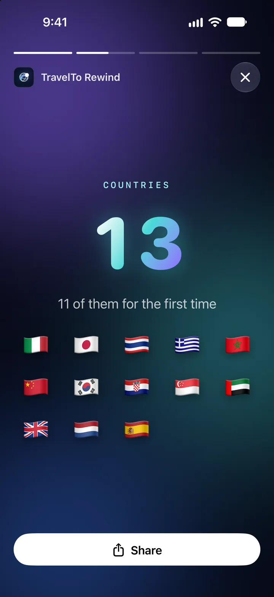
Friends
Swap a code and find out where you've both been.
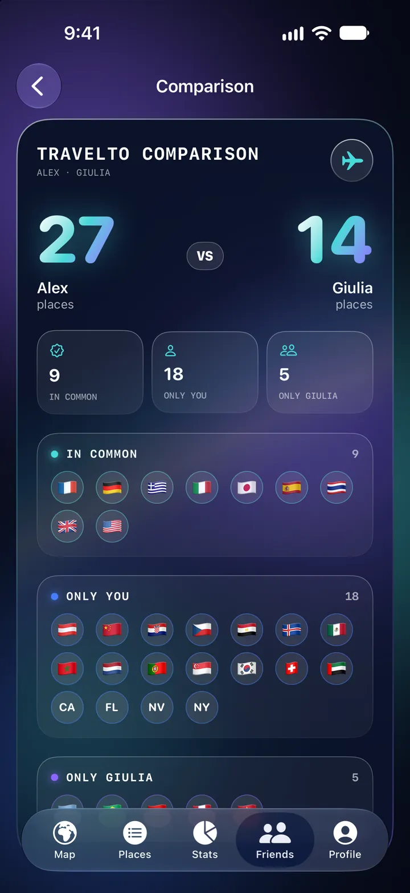
Passport
Map, flags and numbers on one card, ready to share.
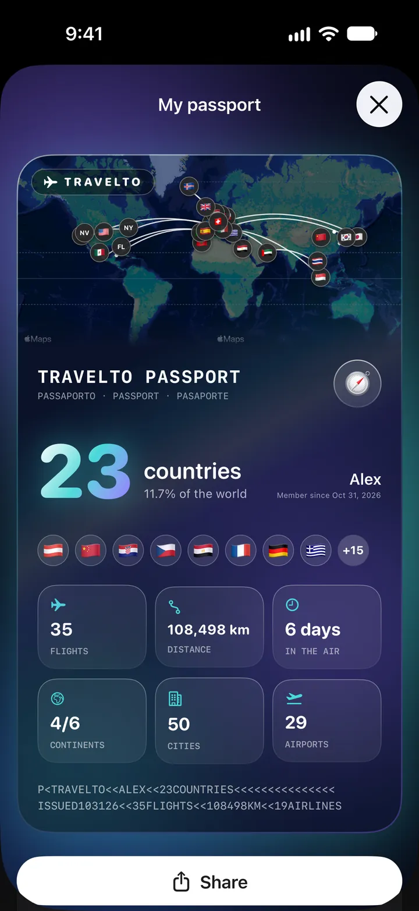
Also
Your next flight's countdown, your map and your share of the world, on the Home Screen and the Lock Screen.
Every profile is saved to iCloud Drive when you close the app. On a new iPhone, open it from Profile › Import from a backup.
Countries you've visited, lived in and dream of, each in its own color. Plus all 50 US states.
Standard or satellite map, light or dark theme, with your flight routes.
Several profiles on the same iPhone, in English and Italian.
No account and no ads. Your trips stay on your iPhone, and you can export them whenever you like.
Free for iPhone